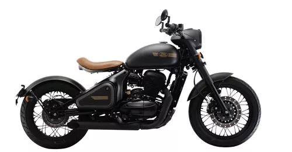

Jawa Motorcycles has a rich history dating back to the early 20th century. It was originally founded in Prague, Czechoslovakia, in 1929 by František Janeček.
In the image below, you can see one of the classic Jawa motorcycle models from the mid-20th century:
For more detailed information about Jawa's fascinating history, visit their official website or check out reputable sources on automotive history.